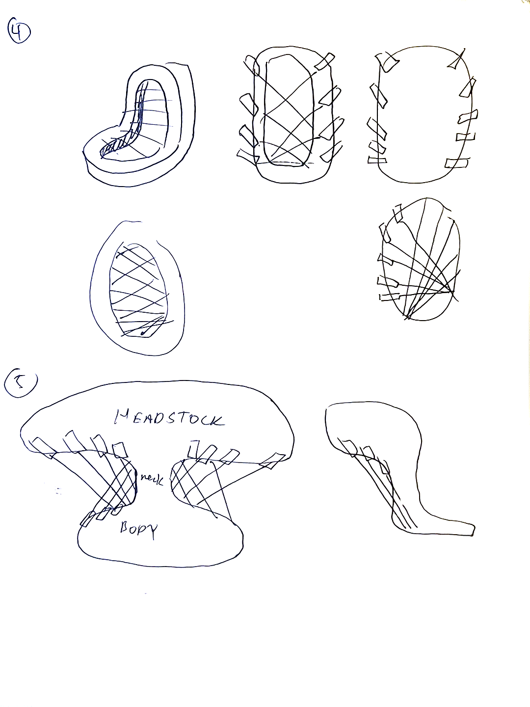
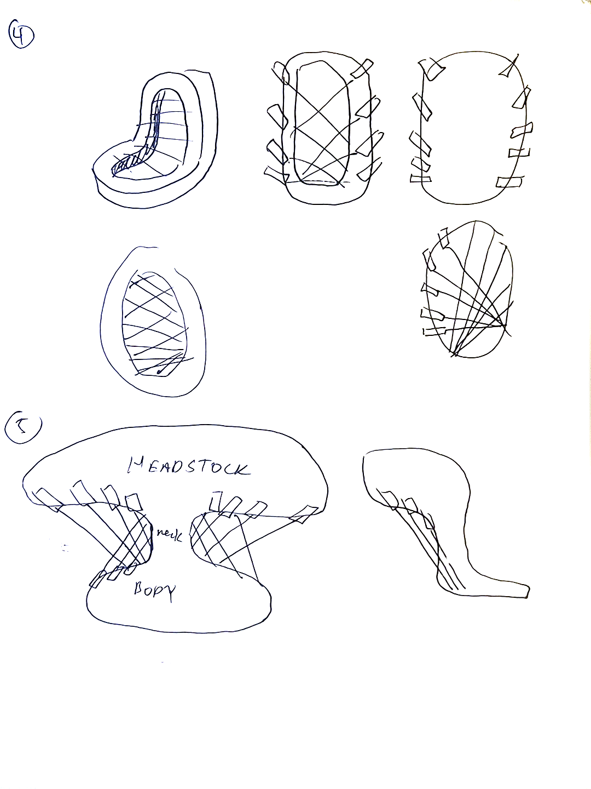

INTRODUCTION

The metaverse is understood as the internet transformed into a spatial experience. It is this spatial component that becomes the topic of architectural design and discourse.
Architects such as Patrik Schumacher understand the metaverse as an opportunity primarily to more deeply connect institutions of commerce and the flow of money. Renders made by Zaha Hadid Architects speculate on the physical sites of companies and their offices dispersed throughout the world, as well as virtual extensions which seamlessly interconnect them.
Schumacher indicates an understanding of the malleability of space and scale, as well as the freedom of interaction that is possible in virtual space. He cites Benedikt Michael’s Cyberspace, hypothesizing that “that there will be a number of different competing kinds of cyberspaces, ‘each with its own culture, appearance, lore and law.’”
The kind of metaverse that Schumacher talks about, therefore, is one conceived of his own interests in capital, digital economies, and how such spaces fit into existing logics of urban and national territories. His Liberaland project is most emblematic of this—a proposed micronation located “between Croatia and Serbia” that acts as a cryptocurrency hub.
This thesis chooses to engage with the metaverse on different terms, with particular interest in how Filipino people engage with the internet. However, the way Schumacher approaches his understanding and proposals for the metaverse reveals issues with the internet and identity which are central to this thesis.
Authenticity
Schumacher’s virtual aesthetic “is based on realistic design and photo-realistic rendering,” in an effort to seamlessly integrate the appearance of other places across the globe into a particular physical space. This approach fits a broader commitment in VR design towards immersion, wherein the designer strives to bring virtual objects closer towards reality through intuitive sensory experiences.
What happens when realism is no longer an imperative for designing virtual objects and spaces; when the limitations of assets becomes apparent? Looking beyond the uncanny valley, how might one leverage the un-realism of virtual space to express real spatial relationships made possible through the internet?
This thesis positions personal oral histories at the center of virtual authenticity. Voice recordings are transformed into text, and then made spatial through 3d models which compile different places mentioned in these interviews.
The result is a series of virtual spaces which, while representing narrated memories, which still retain a virtual uncanniness as one experiences the limtations of digital 3D assets.
Floating worlds with mesh edges that abruptly stop, peripheral cities and interior scenes at fluid scales, repeated tiles and assets, skyboxes with apparent seams, wireframe models, these just a few of the visual limitations made apparent throughout each of these worlds.
To a certain degree, every narrator is unreliable in the sense that they only capture a fragment of a broader history of the Philippines. These assets approach realism but stop abruptly in an attempt to call to attention the limits of memory. Yet, there is always something to be taken away in looking at these memory-worlds in their totality; What aspects of these digital assets draw from our shared reality, and get filtered through the biases and dispositions of these personal stories? Through the act of literally overlapping these stories, one might start to understand all these different ways of being Filipino.
Filipino people have found themselves caught within a broader crisis of authenticity brought about by the internet; people with access to devices connected to the internet are able to engage and contribute to a discourse on what is and is not “real.”
Across mainland and diaspora communities, these discourses have manifested at different scales, such as mass political fake news campaigns, as well as conversations on what makes an authentic Filipino person.
This thesis attempts to address this total breakdown of symbolic order that is the result of a total access of information on the internet.
Identity

Projects such as Schumacher’s Liberaland reveal a move away from national identity as the overriding signifier of what a place is, and who gets to live in it. The significance of nation-states is therefore overridden by the flow of money across the globe.
The absence of nationality as identity demands a re-configuration of identity. As it applies to Filipino communities across the globe, online discourse must shift its understandings of who is authentically Filipino and why. The metaverse this thesis proposes therefore acts as a mediator to understand how this identity is formed in such a world.
The development of a Filipino identity in an online space is not a new phenomenon. For instance, SMS communications are at the center of political organization since the EDSA revolution of the 80s, and the Philippines continues to be the texting capital of the world.
Many Filipino diaspora communities form because the country’s largest export is its labor force; Overseas Filipino Workers (OFWs) rely heavily on global communications to send money and stay in touch with their families in the Philippines.
It is evident, therefore, that the global Filipino population relies heavily on the internet. The Filipino identity is already fragmented when one considers the Philippines as an archipelago of people of different ethnicities, languages, and histories. This fragmentation is exacerbated by the dispersal of Filipinos across the globe, yet a connection remains—whether familial or through encounters online—that still binds together what is a singular notion of identity.
PROPOSAL
This thesis argues for the aggregation of memories into digital space as a way to conceptualize identity. The metaverse, then, acts as a repository which stores and spatially organizes memories transformed and represented as digital data. The digital space would then be made accessible through an application developed in Unity3D that can run standalone on a Meta Quest 3 headset.
METHODOLOGY
Through interviews with Filipino people of different backgrounds, I sought to make visible a connection between deeply personal stories to a shared global history. Each person I interviewed mentioned different places that were the sites of their memories. The immersive aspect of this metaverse would allow users to situate themselves in places that in real life are distant from each other.
Semantic Space

The logic of semantic space would be the organizing principle by which each of these virtual spaces would orient and space themselves around within a virtual space. Vector embeddings are produced by providing a large text corpus (such as the conducted interviews, or a scrape of every post on twitter) and training a neural network on the corpus.
The neural network creates an n-dimensional vector embedding for each word (n being an integer determined by the user) determined by examining the words around the given word. The result is a collection of vectors that are each an indication of how “similar” or “different” two concepts are within the semantics of the text corpus itself.

One way to visualize the cosine similarities of each of these vectors is through a spring force tension simulation; Each queried word has a score of similarity between -1.0 and 1.0 with every other word. The tension simulation runs until each word reaches a stable equilibrium.
The simulation used throught this thesis is run by feeding vector embeddings into a Grasshopper script created by Panagiotis Michalatos.
Tensioning System Demonstration
1/16" cables are wound together through tension knobs. The assembly (see below) takes cues from the string-through bodies
of electric guitars, in which tuning pegs tension guitar strings while metal ferrules stabilize them from the back of the body.
Unlike guitar tensioning systems, the chair relies on low-gauge (and much cheaper) steel cable as the loading condition changes from the system itself to both the system as well as an additional body and guitar. The twisting action is preserved while the knobs themselves take more after the strandberg bullet designs, and also winds the cable onto itself in a helical fashion.
Play the videos with your sound on! The hidden ridges both keep the knob-wire system from unfurling but also provide resistance that leads to a satisfying clicking noise with each turn.
Prototypes
Throughout the semester, tensioning prototypes were created in parallel to the overall design development of the chair.
Knob sizes, textures such as knurling and hand-indentations, and overall connection details went through several iterations
before reaching the eventual bullet shape.
Below is an early prototype testing knurling and spanning; I determined that 3d printed knurls at this scale produced friction but were uncomfortable, leading me to the eventual indentation design so that the user would still be able to generate enough torque while having a good grip.

Sitting on The Chair

Assembly Diagrams
Process Photos


Sketches
 
